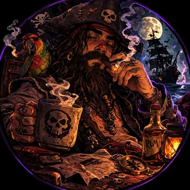
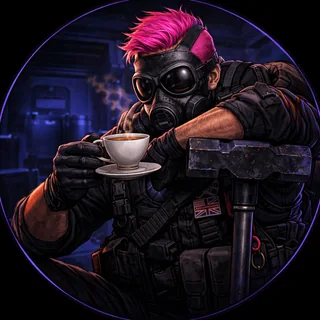

Dungeons & Dragons
Evidence of Absence
One campaign, one session so far, and already far too much blood in the floorboards. Run by MrTeeMan with Azarth, Zenko Shadowleaf, Daenalieth Althaea and Kael Thorne.
Campaign archiveCurrent release
Windows / x64{{ tactics.description | escape }}
Release information
{{ release.version | escape }}
{{ notes.summary | escape }}
{% endif %}We’re a community of friends, gamers, server dwellers, and tabletop troublemakers. This is where we keep the streams, the worlds, the chaos, and the campaign notes in one place.
Dungeons & Dragons
One campaign, one session so far, and already far too much blood in the floorboards. Run by MrTeeMan with Azarth, Zenko Shadowleaf, Daenalieth Althaea and Kael Thorne.
Campaign archiveShared worlds
V Rising is the current server. Palworld, Enshrouded and Minecraft return when the group does.
View serversMrTeeMan on YouTube, plus Twitch appearances from MrTeeMan, TeaMan, and Kookerz whenever the stars align.
Vampires, castles, and just enough opportunistic violence to keep everyone focused.
Creature collecting, automation, and the ongoing danger of industrial overcommitment.
Co-op survival exploration for the moments when the group collectively decides to build something dramatic.
The eternal fallback plan. If all else fails, there will be blocks.

Founder of TeePeople, server wrangler, content maker, and resident Dungeon Master. Operates across far too many games to pick favourites and treats spare time as a scheduling problem.

A long-standing core member with pirate energy, a love of roleplaying, and a suspiciously high tolerance for survival games, caffeine, and general nonsense.

Variety gamer with bright energy and no respect for genre boundaries. Usually somewhere between Siege, Warframe, Minecraft, and whatever else caught his attention this week.